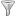

Alternatively you can use the Right click menu.
The WebSockets tab displays all messages from WebSocket connections. While ZAP is active, visit e.g.: Mozilla's BrowserQuest to see WebSockets in action.
You can restrict the display of messages to one specific WebSocket
channel or all.
If you select a specific channel, then the Show handshake button
()
becomes enabled. When you click on it, the corresponding HTTP handshake is
shown in the Request/Response tab.
In the filter dialog () you can further control which messages are displayed.
You can set custom breakpoints using the Add Custom Breakpoints
button ( ).
).
Alternatively you can use the Right click menu.
Right clicking on a WebSocket message will bring up a menu which will allow you to:
WebSocket connections can be excluded from the WebSockets tab by adding an excluded URL to the Session Properties. Clicking on this item, brings up the session properties with the URL pre-filled. Excluding a WebSocket connection will not result in closing the connection, but in forwarding them without further processing.
This will bring up the Add Break Point dialog which allows you to set up a custom break point.